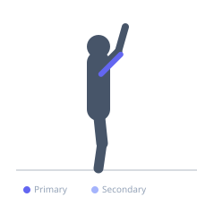
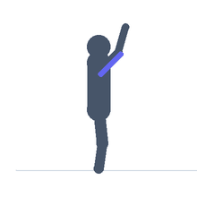

Exercise guide / Overhead Tricep Stretch
Overhead Tricep Stretch
The overhead tricep stretch targets the long head of the triceps brachii, which is the only tricep head that crosses the shoulder joint. By raising the arm overhead and bending the elbow, the long head is placed on maximal stretch as both shoulder flexion and elbow flexion work simultaneously to lengthen it. This stretch is commonly used as part of upper body warm-up and cool-down routines.
Primary muscles
triceps long head
Secondary muscles
triceps lateral head
Stabilizers
deltoid anterior
Equipment
No Equipment (Bodyweight)


Starting position
- Stand or sit tall. Raise one arm directly overhead.
Setup
- No equipment needed. Can be performed seated or standing.
Steps
- Step 1: Raise one arm straight overhead.
- Step 2: Bend the elbow, allowing the forearm and hand to drop behind the head.
- Step 3: Use the opposite hand to gently push down on the elbow of the raised arm, increasing the stretch.
- Step 4: Hold until a stretch is felt along the back of the upper arm — 30–60 seconds.
- Step 5: Release and switch sides.
Coaching cues
- Let the elbow point toward the ceiling
- Use the other hand to gently guide, not force
- Keep the torso upright and the core lightly engaged
Breathing
- Breathe slowly and evenly throughout.
Range of motion
- Bring the hand as far down behind the head as the shoulder allows without pain.
Tempo
- Hold 30–60 seconds per side. 2–3 rounds.
Common mistakes
- Applying excessive force through the assisting hand, stressing the elbow
- Leaning sideways with the torso rather than keeping it upright
- Not holding long enough for the stretch to take effect
Safety
- Apply gentle pressure only — the elbow joint is sensitive to forcing
- If elbow discomfort arises, stop and assess
Training
- mobility: 2–3 reps
- mobility: 1–2 sets
- Rest: {'mobility': 10}